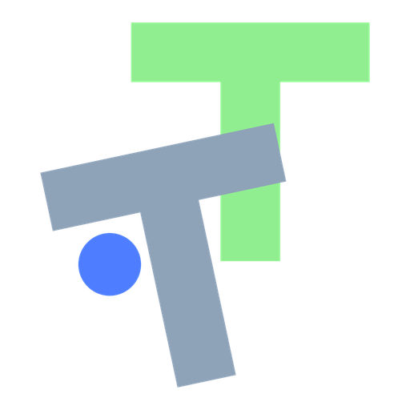
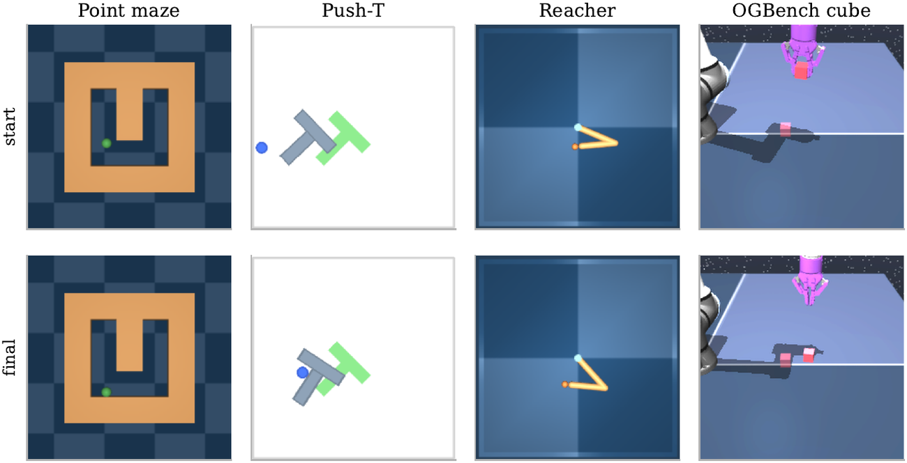
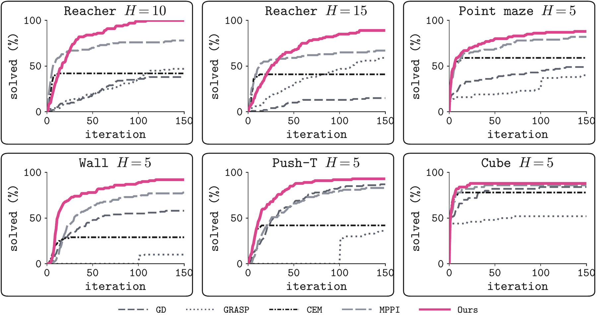
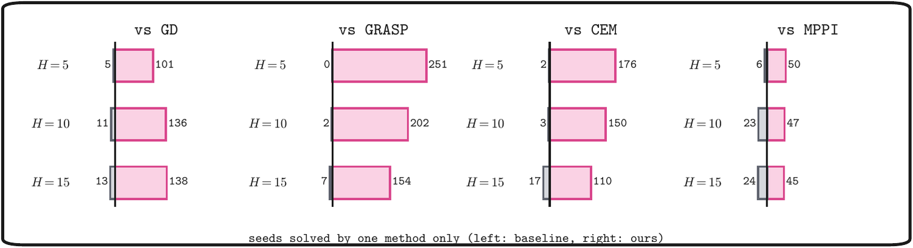
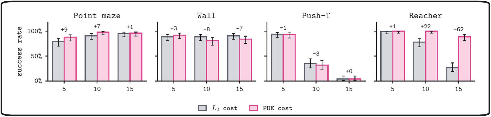
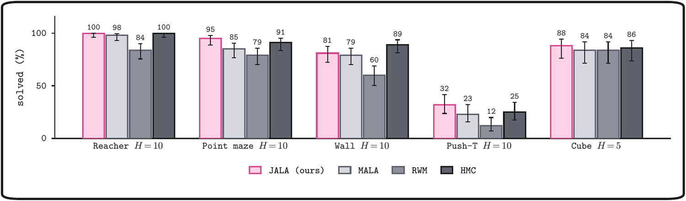

SMCPlan
TL;DR
Planning in a learned world model is usually gradient descent on one action sequence. We plan with a population instead. Each particle is a complete action sequence, sequential Monte Carlo moves and reweights the population, and an optimizer step updates the nominal plan from it, which re-centers the target for the next iteration. We also replace the straight-line latent distance to the goal with a cost-to-go solved from a PDE on a roadmap of offline latents. Over twelve settings of four environments and two world models, the planner solves 79.8% of seeds against 72.3% for MPPI, the strongest baseline, and 50.9% for gradient descent.
The Problem
A world model turns planning into a search over action sequences: roll a sequence out in latent space and score the last latent against the goal. The two standard ways to run that search fail differently. Sampling-based planners such as CEM and MPPI only need cost evaluations, but they redraw every sample from a Gaussian around the current plan at every iteration, so the samples reach the cost-tilted distribution only through importance weights, and the search degrades as the horizon and the action dimension grow. Gradient-based planners differentiate the cost through the model and descend quickly when the goal is reachable greedily, but a single trajectory commits early and gets stuck exactly where the model is least trustworthy.
The cost is the second problem. Latent distance to the goal is a straight line, and a straight line in latent space happily crosses a wall.

Method
A plan \(\bm\mu\) is an action sequence of horizon \(H\). Put a Gaussian reference \(q(\cdot\mid\bm\mu)\) around it and tilt that reference by the planning cost \(C\):
The plan moves by one optimizer step per iteration, so the targets of consecutive iterations form a sequence, and sequential Monte Carlo is the machinery that carries a population of particles across such a sequence. The two halves of an iteration are the expectation and maximization steps of the EM view of MPPI: SMC supplies the weighted population, the optimizer moves the plan to it.
Move
Each particle takes one unadjusted Langevin step on the current target, \(\mathbf a_k^{(i)} = \mathbf a_{k-1}^{(i)} + \eta\,\nabla_{\mathbf a}\log\gamma_k(\mathbf a_{k-1}^{(i)}) + \sqrt{2\eta}\,\varepsilon_k^{(i)}\). The cost gradient flows through the frozen world model.
Reweight
Weights are carried multiplicatively, \(W_k^{(i)} = W_{k-1}^{(i)}\,G_k(\mathbf a_{k-1}^{(i)},\mathbf a_k^{(i)})\), with the incremental weight of an SMC sampler. On a time-varying potential this is Jarzynski's equality.
Resample
When the effective sample size falls below \(\tau N\), systematic resampling clones the particles that are working and drops the rest. Effort moves onto the branches that are paying off.
Update
The plan is moved by the weighted population gradient, \(\mathbf g_k = \sum_i w_k^{(i)}\nabla_{\bm\mu}U_{\bm\mu_k}(\mathbf a_k^{(i)})\), passed to Adam. This re-centers the target for the next iteration.
A cost-to-go from a PDE on the latent roadmap
Classical planners do not use distance to the goal, they use a cost-to-go, obtained by solving a PDE over the feasible state space. A latent world model has no explicit feasible set, so we build one from the data. The vertices of a roadmap are encoded dataset states, and each observed transition connects its endpoint to its \(\kappa\) nearest vertices, which gives a graph whose edges are movements the environment actually allows. On the graph Laplacian \(L\) of that roadmap we take one backward Euler step of the heat equation from the vertex nearest the goal, following the heat method of Crane et al.:
We keep only the ordering that the heat field induces, not its magnitude, which is the part the Varadhan estimate gets wrong. The planning cost evaluates this cost-to-go along the whole predicted rollout, under weights that grow geometrically toward the final step, and adds it to the terminal latent distance \(\mathcal L\) and an action penalty:
Setting \(\lambda_V = 0\) recovers the plain \(L_2\) objective, which is why the tables below report both arms of the same planner. \(\kappa\) and the diffusion time are picked per environment from the offline dataset alone, with no planning seed, world-model rollout or success signal entering the choice.
Results
Four environments at horizons 5, 10 and 15, 100 seeds per cell. Every planner gets twelve candidate action sequences and 150 iterations over the same pretrained world model, the same seeds and the same start and goal pairs. Success is measured by executing the plan in the simulator, not by the latent distance the planner optimizes.
| Reacher | Point maze | Wall | Push-T | ||||||||||
|---|---|---|---|---|---|---|---|---|---|---|---|---|---|
| Planner | 5 | 10 | 15 | 5 | 10 | 15 | 5 | 10 | 15 | 5 | 10 | 15 | mean |
| GD | 83 | 38 | 15 | 49 | 66 | 69 | 58 | 58 | 59 | 87 | 24 | 5 | 50.9 |
| GRASP | 36 | 47 | 59 | 40 | 49 | 63 | 10 | 10 | 4 | 36 | 5 | 0 | 29.9 |
| CEM | 69 | 42 | 41 | 59 | 75 | 80 | 29 | 41 | 56 | 42 | 6 | 3 | 45.2 |
| MPPI | 86 | 78 | 67 | 82 | 95 | 97 | 78 | 87 | 86 | 83 | 27 | 2 | 72.3 |
| Ours, PDE cost | 100 | 100 | 89 | 88 | 98 | 96 | 92 | 81 | 84 | 93 | 32 | 4 | 79.8 |
| Ours, \(L_2\) cost | 99 | 78 | 27 | 79 | 91 | 95 | 89 | 89 | 91 | 94 | 35 | 4 | 72.6 |
Success rate (%) per cell, best in bold. Our planner is highest in eight of the twelve cells, and ahead of the strongest baseline by a statistically significant margin in four of them (exact McNemar on paired seeds, Holm-corrected across the twelve settings): Reacher at every horizon and Wall at \(H{=}5\). No cell in which a baseline leads is significant.

The planners fail on different seeds
Two planners with the same success rate need not solve the same seeds, so we compare them pair by pair on shared seeds. Across the twelve settings our planner solves 375 seeds that GD does not while GD solves 29 that ours does not, and the counts are 607/9 against GRASP, 436/22 against CEM and 142/53 against MPPI.

Does the PDE Cost Help?
The same planner under the two costs, on the same seeds. The cost-to-go earns its place where the geodesic and the straight line disagree. On Reacher it adds 22 and 62 points at \(H{=}10\) and \(H{=}15\), solving 22 and 65 seeds the \(L_2\) cost misses against 0 and 3 in the reverse direction. On Point maze it adds 9, 7 and 1 point. Where the straight line is already close to the geodesic the two costs are interchangeable, and on Wall the \(L_2\) cost leads by 8 and 7 points at the longer horizons, neither difference significant. Its usefulness is a property of the roadmap, not of the planner.


Watch the Planner Act
The executed rollouts, ours against gradient descent on the same seed, the same start and the same goal. Both rows run on one timeline, so every step is the same step. Scrub, or use the arrow keys.
What Is in the Code
- One planner, four propagation kernels. ULA with Jarzynski weights, plus MALA, random-walk Metropolis and HMC, ported from blackjax and verified against it.
- Two world-model families. DINO-WM for Point maze, Wall and Push-T, LeWM/JEPA for Reacher and the OGBench cube, behind one planner interface.
- Five planners in one codebase, each at its own authors' objective: GD, GRASP, CEM, MPPI and ours.
- The roadmap cost as a separate switch.
planner.lambda_v=0recovers the \(L_2\) objective, and the cost can be applied to the baselines too. - Every config behind a reported number ships as-is, including the per-environment rollout chunking that keeps a 16 GB card alive at \(H{=}15\).
Citation
@misc{viswanath2026latentspaceplanningsequential,
title={Latent Space Planning with Sequential Monte Carlo},
author={Hrishikesh Viswanath and Anindita Ghosh and Uttaran Bhattacharya and Aniket Bera},
year={2026},
eprint={2611.26706},
archivePrefix={arXiv},
primaryClass={cs.RO},
url={https://arxiv.org/abs/2611.26706},
}